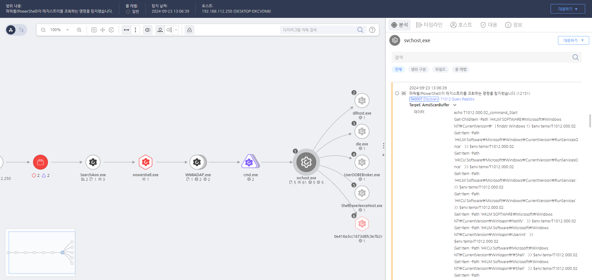

T1012.000.02 Query Registry
D3FEND
MITRE ATT&CK 액션을 기준으로 대응 방안을 작성
Detection
Action = "AMSISCAN" AND
CurrentProcess = "powershell.exe" AND
AMSISCANDATA = "Get-ChildItem" OR "Get-Item" AND
AMSISCAN_DATA = "HKCU" OR "HKLM" OR "HKU" OR "HKCR" OR "Registry::"
Detection(EDR)

https://172.18.10.125:8903/#/event/edr/66f0eab9002dc7960000007b
Response
해당 행위를 수행한 프로세스를 종료합니다.
Mitigations
레지스트리 접근 제한
- 권한 최소화: 레지스트리 접근 권한을 최소화하여 일반 사용자 및 비관리자 계정이 중요한 레지스트리 키를 조회하지 못하도록 설정합니다.
- 레지스트리 경로 보호: HKEYLOCALMACHINE\Software\Microsoft\Windows\CurrentVersion\Run 및 HKEYCURRENTUSER\Software\Microsoft\Windows\CurrentVersion\Run 같은 중요한 레지스트리 키에 대한 접근을 제한합니다.
- 레지스트리 감사: 시스템에서 중요한 레지스트리 키에 대한 접근을 추적하고, 비정상적인 접근을 감지하기 위해 감사 로그를 설정합니다.
보안 솔루션 강화
- EDR/XDR 솔루션을 사용하여 레지스트리 쿼리 명령(
reg query, powershell Get-ItemProperty, regedit)을 탐지하고 경고를 생성합니다.
- Windows Defender에서 레지스트리 접근을 실시간으로 모니터링하고 악성 활동을 차단합니다.
이벤트 로깅 및 감사 정책 강화
- Windows Event Log에서 레지스트리 변경 및 접근 이벤트(
4662, 4688, 4689)를 모니터링하여 레지스트리 조회 및 수정이 비정상적으로 발생했을 때 경고를 발생시킵니다.
- Audit Policy를 활성화하여 중요한 레지스트리 키의 조회와 수정에 대한 기록을 남기고, SIEM 시스템을 통해 이를 분석하여 의심스러운 활동을 빠르게 탐지합니다.
레지스트리 키 보호
- Windows 권한 강화 및 Registry Guard 기능을 통해 중요한 레지스트리 항목을 보호하여 공격자가 이를 수정하거나 조회할 수 없도록 합니다.
SeBackupPrivilege 및 SeRestorePrivilege와 같은 고급 권한을 제한하여 레지스트리 백업 및 복구 권한을 일반 사용자에게 제공하지 않도록 합니다.
정기적인 보안 점검 및 패치 적용
- 시스템의 레지스트리 구성을 정기적으로 점검하여 비정상적인 레지스트리 변경 사항을 확인합니다.
- 최신 보안 패치를 적용하여 레지스트리 관련 취약점을 악용한 공격을 방지합니다.
레지스트리 쿼리 제한
- PowerShell 및 명령 프롬프트를 통해 레지스트리 접근을 제한하는 그룹 정책을 적용합니다. 예를 들어, 특정 사용자에게 PowerShell 명령을 제한하여 레지스트리 조회가 불가능하도록 설정합니다.
- Applocker 또는 Device Guard를 사용하여 악성 프로그램이나 스크립트가 레지스트리에 접근하지 못하도록 방지합니다.
Affected Techniques
Action 실행시 함꼐 영향을 받는 다른 Techniqes
| D3FEND |
| D3-FIM File Integrity Monitoring |
| D3-SCA System Call Analysis |
| D3-FA File Analysis |